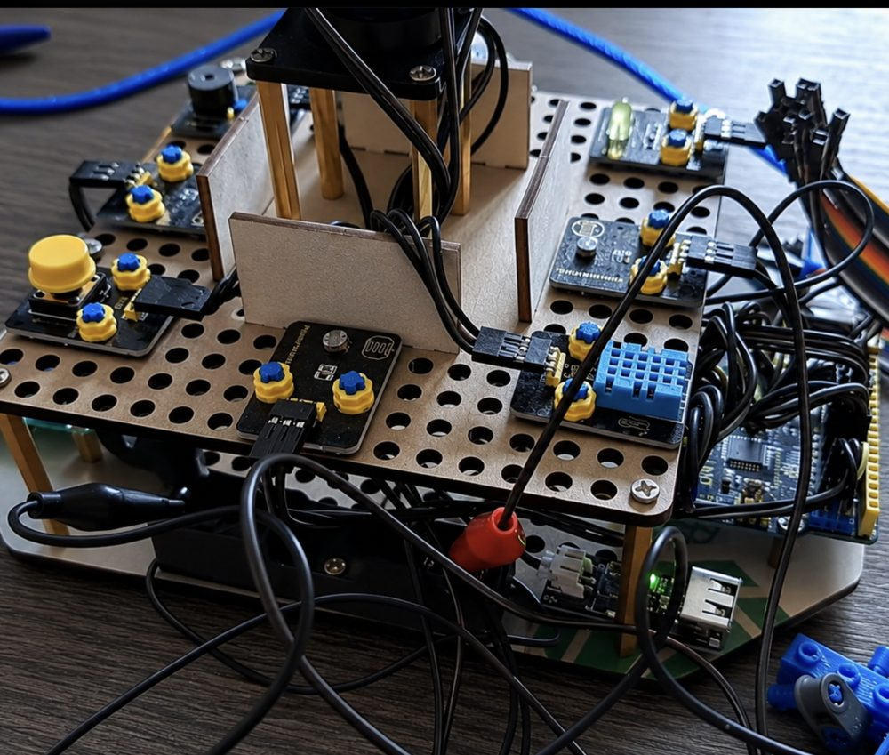

Why build it
I wanted a project that shows what renewable energy can do in an everyday, useful way. Solar tracking keeps a panel facing the sun as it moves, so it collects more energy than a fixed panel.
I researched project ideas for about a month and wrote full proposals for two options: this solar tracker and a 3D-printed, remote-controlled robotic dog. I chose the solar tracker because it combines electronics, motor control, power management and sustainable energy in one build.
How it works
- Four light sensors measure brightness from different directions, which tells the Arduino where the sun is
- Two servos tilt and pan the panel toward the brighter side until the readings balance
- A charging module uses the panel's power to charge a phone
- A temperature and humidity sensor, a 16×2 LCD, a buzzer and a button show readings and let you interact with the station
The build
The station is built on two laser-cut wood plates held apart by brass standoffs. Sensor modules mount to the top deck and the LCD sits at the front. The panel and its two servos sit on a centre mast, and the station runs on an AA battery pack.


Engineering skills it covered
| Area | What it involved |
|---|---|
| Hardware integration | Choosing, wiring and combining the charging module, servos, light sensors and microcontroller so they work together |
| Electronics design | Circuits for power management, motor control and the sensor interface |
| Motor control | Moving the servos precisely to keep the panel aimed at the sun |
| Power management | Converting solar energy into electricity that can charge a phone reliably |
| Programming | Reading the sensors, working out where the sun is, and driving the servos |
| Manufacturing | Laser cutting and 3D printing for the chassis and sensor mounts |
Planning
Before building, I wrote a 24-page proposal with a parts list, pictorial and schematic diagrams, a sketch of the laser-cut and 3D-printed parts, and a week-by-week timeline.
| Phase | Work |
|---|---|
| Research | Brainstorm renewable energy ideas, check feasibility, write two proposals |
| Design | Schematic and pictorial diagrams, parts list on a $50–60 budget |
| Fabrication | Laser cut and 3D print parts, cut materials to size, assemble |
| Electronics | Assemble and fit the circuit with neat wire management |
| Code | Program solar tracking, troubleshoot, add features |
| Report | Document the design, build and testing |
I estimated the full project at 167 to 217 hours.
What I learned
- How a sensor-driven tracking loop works: compare inputs, find the error, move to reduce it
- How to plan a project from proposal to finished build, with a budget and timeline
- How to combine laser-cut parts, electronics and code into one working product